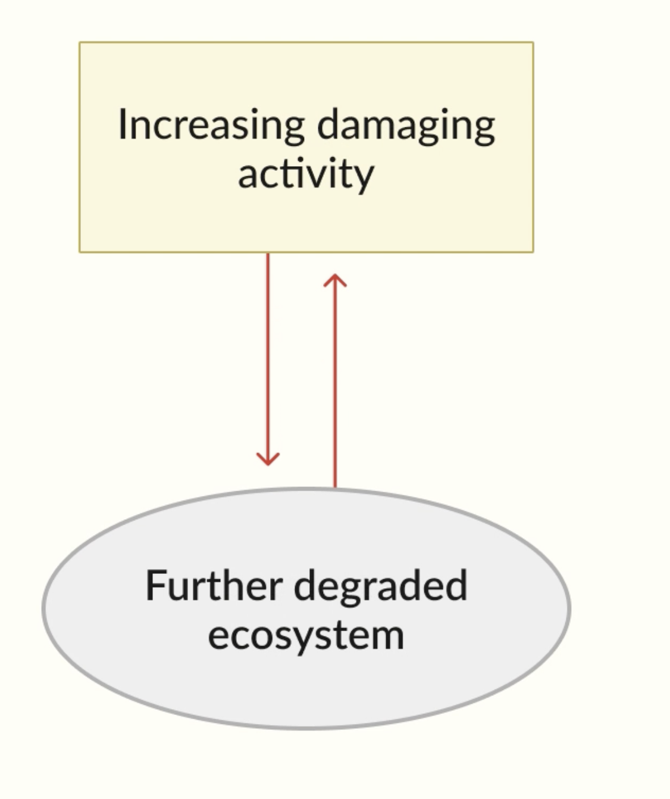
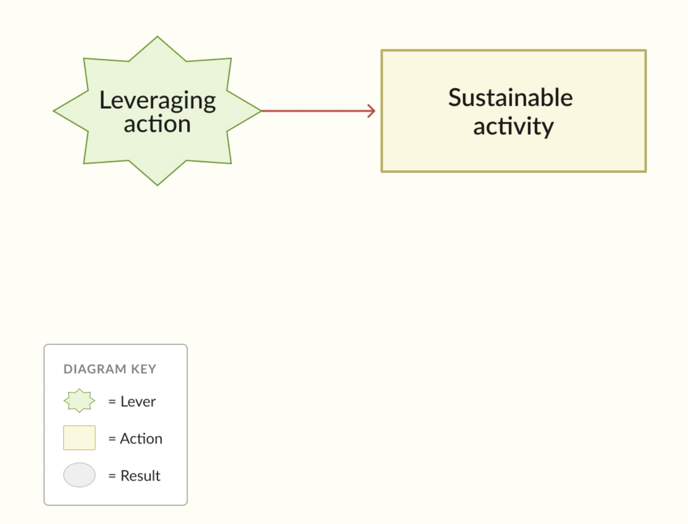
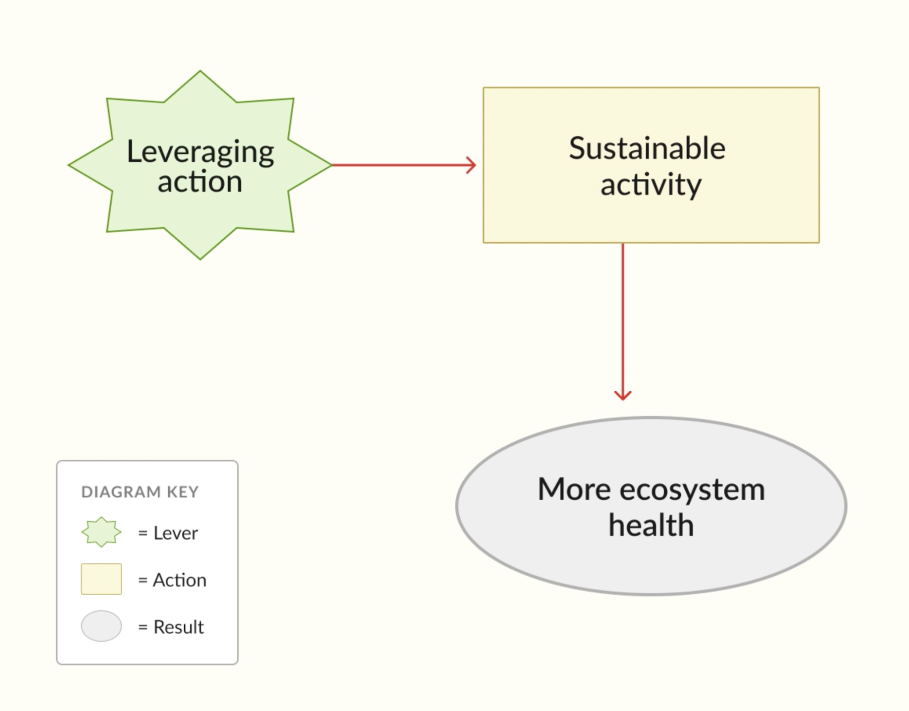
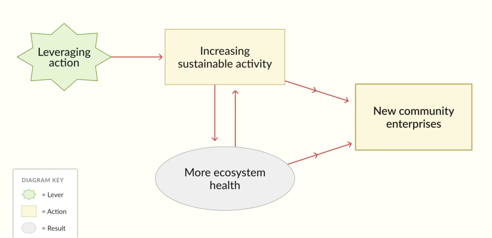
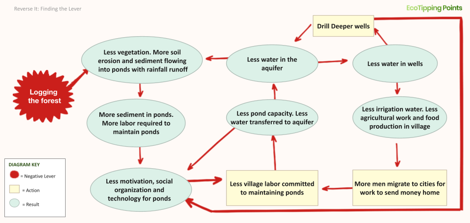
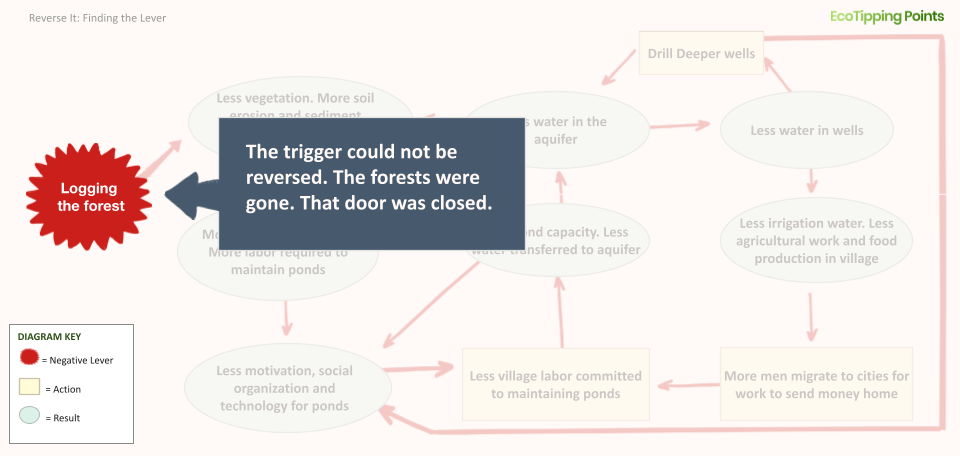
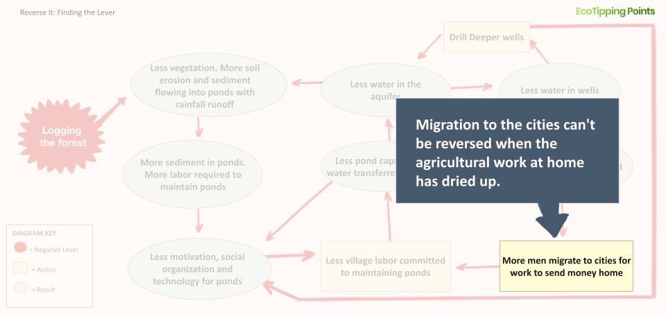
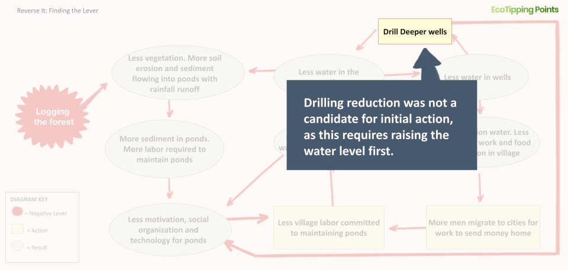
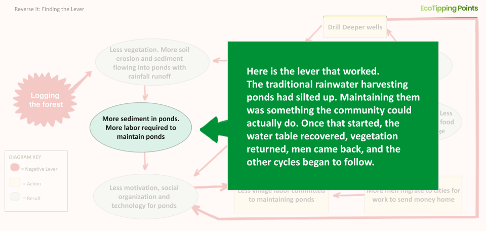
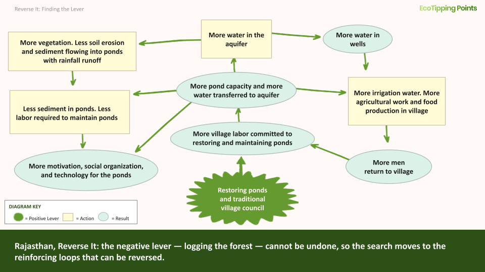

Your Goal
Come away with one or more positive tipping point levers: sets of actions targeted at the points in the system most important to transform, powerful and achievable enough to set virtuous cycles of restoration in motion.
What is a positive tipping point lever?
This 1-minute video illustrates how a feedback loop driving decline can be reversed.

Key Concept
A positive tipping point lever is a package of actions that set in motion changes leading to a turnabout from decline to restoration and sustainability.
Solutions as Sets of Actions
Systems thinking looks at ecological problems as a web of cause and effect spread through the human-environment system. It looks for solutions in sets of actions that ignite change across the system by reversing the self-reinforcing feedback loops driving decline. We call those targeted actions that trigger systemic change positive tipping point levers. Positive tipping point levers have the power to create this change because they disrupt vicious cycles, and replace them with virtuous cycles that cascade restoration through the human-environment system. But not all actions, no matter how committed or resource intensive, can create a turnabout. And so, devising a set of actions that has the right leverage power is the key to setting restoration in motion.
Devising a positive tipping point lever means finding the points in the system most important to transform, and pairing them with actions powerful and achievable enough to set those changes in motion. That power comes from two sources at once: the ecosystem and the community. An action has enough power when it enlists nature's self-restorative processes and sets off chains of cause and effect within the ecosystem far beyond what any community could orchestrate. An action is feasible when the community has the time, labor, resources and commitment to carry it through. Both forces grow when the community's prosperity is tied to the health of its ecosystem. That alignment is what sets virtuous cycles of restoration in motion.
For contextWatch the Apo Island story on marine sanctuary restoration in the Philippines (7 min)
Seeing the System in Action
How can the right set of actions become a positive tipping point lever? This video illustrates how Apo Islanders created a turnabout in their system with a few well chosen actions.
Devising a Positive Tipping Point Lever
The commonalities in our case studies of success have shed light on what it takes to turn things around with a positive tipping point lever. In our flagship cases, communities began with assessing the scope and history of their problem and recognizing how their own damaging activity was degrading their ecosystem. They then decided to alter the community's role in perpetuating the vicious cycles of decline, by figuring out targeted actions that would let them replace damaging activities with sustainable activities aimed at ecosystem recovery. They chose actions that gave their ecosystem the opportunity to kick in its own self-restorative power, which instigated changes far beyond what they could orchestrate themselves. These actions re-aligned their community's methods of meeting basic needs with choices that would also benefit the ecosystem. The energy and resources they put into revitalizing their ecosystem quickly fed into visible gains for their community. Those gains reinforced their sustainable activity and their commitment to putting gains into new restorative efforts.
Systems thinking describes their recoveries this way:
- Recognized the interconnected elements of their problem and amplifying feedback loops driving decline in the human-environment system
- Dedicated themselves to feasible actions that not only broke, but reversed those feedback loops
- Figured out where in the system feedback loops could be broken by a change in their actions
- Devised actions that replaced destructive activities with sustainable activities that were powerful enough to reverse feedback loops by triggering a new chain of cause and effect leading to ecosystem health
- Directed the benefits of ecosystem recovery into increasing sustainable activity
- Initiated new restorative amplifying feedback loops by putting gains into enterprises that aligned social health with ecological health
- Intentionally broke the vicious cycles and triggered restorative virtuous cycles with such amplifying force that the entire system crossed a threshold from decline to restoration
This process can be described in the following way:
-
Recognized vicious cycle.

-
A leveraging action is where the reversal begins. It replaces the damaging activity with a sustainable one.

-
The sustainable activity gives the ecosystem room to recover.

-
And a healthier ecosystem supports even more sustainable activity. There's more to work with, so the practice is easier to sustain. Sustainable activity and ecosystem health now reinforce each other. This is a virtuous cycle. Once it takes hold, it keeps building on itself.

-
Community enterprises integrate restoration with the social fabric of the community to add new social virtuous cycles that consolidate gains.


Finding an Action with Leverage
Crossing a threshold from decline to restoration means flipping the feedback loops already at work in vicious cycles so they set virtuous cycles in motion instead. Using systems thinking, these are the steps to finding an action with that kind of leverage:
- Understanding what makes a lever powerful
- Finding powerful actions in the system for leverage
- Choosing interventions that are feasible for the community
What Makes a Lever Powerful
A positive tipping point lever must be powerful enough to transform the system by setting off virtuous cycles of change across it. Our case studies of communities that managed a turnabout show common qualities in their levers. We draw upon their Ingredients for Success to cast light on how to devise a lever. Though many vicious cycles can become sites for intervention, only actions that carry tremendous force can tip the balance of ecological degradation. That force comes from both the ecosystem and social system. There is no formula for choosing the right course of action in unique circumstances. But our case studies point to certain qualities of a powerful lever, grounded in how ecosystems function on their own and as part of the human-environment system.
Wherever human communities have developed, they have done so by settling in places where the land and water could sustain them. Where they have endured, it has been through adapting to their environments by building their communities and working their natural environments in ways that also allow the ecosystem to adapt to them. The ecosystem and social system co-adapted: each altered the other, in ways both could absorb while maintaining vitality. Those human-environment systems have been sustainable because enough of the choices made about how to build the society were also good for the ecosystem they relied upon. A powerful lever grounds gains for the community in gains for the ecosystem.
As an ecosystem copes with destructive human activity, it can slowly transform to the point of being uninhabitable as its complex internal relationships and processes can no longer function. When forests were cut down in Rajasthan, not only did many plants and animals lose their habitat, but it slowly shrank the rivers both above and below ground. These same complex internal relationships in nature are the key to devising a powerful positive tipping point lever. Even if those processes have endured tremendous destructive pressure, an infrastructure for regeneration is ingrained in nature's memory through its species' behaviors and ecosystem cycles. The living beings comprising the ecosystem will move towards revitalization if given the opportunity. Plants will grow again if they have access to groundwater. Tigers that left a desertified region will return with a thriving forest. Humans cannot micromanage these intricate ecosystem relationships, but we can create conditions that set nature's self-restorative powers in motion. In the case of Rajasthan, community members built dams to help replenish the aquifer, or underground rivers, and nature's own internal process took care of reviving dead and dry rivers, forests, wells, animals, irrigation systems, and the community.
Sometimes new innovations help kick in those natural processes. Just as often the answer lies in our memory of social practices built over long years of co-adaptation and then abandoned. Whether the technology is new or old, actions capable of transforming a spiraling decline must draw on nature's self-restorative power, because we do not have the strength or reach to do it on our own. We must ask what would have to be true for the ecosystem to begin recovering on its own, and look for ways to create those conditions.
Finding Powerful Actions for Strategic Points in the System
A diagram of the problem is essential for devising a positive tipping point lever, because it shows where in the human-environment system the feedback loops driving decline can be reversed. The diagram clarifies where vicious cycles are at play, how they overlap and intensify each other's force, and which elements in those loops are most open to change. These are the places in the system that are points of leverage. The actions you choose must be effective, must draw on nature's self-restorative power, and must fit the community's current resources. Reviewing the history of the problem helps reveal a point before the decline when human activities were sustainable. Innovations and successes in other communities also offer rich possibilities. The experience of our case studies suggests that strong levers often come from a mixture of new ideas, the knowledge, experience and memories of community members, and the infusion of outside support.
A good starting place is to use your diagram to identify the feedback loops responsible for setting decline in motion. Making sense of how nature's self-restorative powers were damaged in that cycle will also provide clues to effective actions. Then locate feedback loops that play a role in instigating or maintaining multiple vicious cycles. These feedback loops may be particularly effective sites of change, since a transformation there could spiral change through the human-environment system. For each vicious cycle, scrutinize community action as a location for change, since we only have agency within the social system. Start by brainstorming whether the community actions maintaining the loop can be changed in ways that alter the cycle through a restorative impact on the ecosystem. Then imagine whether there are new actions the community could take that might alter the cycle in the same way. With each candidate, speculate on the downstream impacts, to gauge whether it would lead to improvements for the community that encourage sustaining the effort. All of this can point to parts of the system where change could happen with enough force to set a virtuous cycle in motion. Drawing your own maps of the chains of effects a new or changed action might trigger will help determine whether a location is an effective site for action, and whether the action can set virtuous cycles in motion.
Questions to guide your analysis of leverage points:
- Where are the vicious cycles?
- Which vicious cycles are most responsible for driving other vicious cycles?
- Where is the community able to act?
- Which connections within vicious cycles can be broken by community intervention?
- Are there any actions that are preventing nature from restoring itself?
- Are there any destructive activities that the community can discontinue or alter to encourage ecosystem recovery?
- Are there new activities that could be tried that could redirect the vicious cycle? Any old practices, rules, or resources that were abandoned that could be revitalized?
- Has this problem been solved in another community? What did they do to interrupt their decline?
Intervention in a vicious cycle is not always possible. Some may be set in motion by ecological or social processes outside of the community's control, require more resources from the community than they have, or be located in a historical incident that cannot be undone. Recognizing the places in the system that cannot be changed is an important step towards finding where change is possible. In our case study in Rajasthan, the community could not change the fact that their ancient forests had been clear cut for timber, which set in motion their water scarcity. Since that damaging activity could not be replaced, they needed to find some other place in the system with vicious cycles that could be reversed.
For contextWatch the Gopalpura story on rainwater harvesting in Rajasthan, India (11 min)
If they had searched for leverage points on a diagram of their crisis, it would look like this:






Choosing Actions That Are Feasible for the Community
Even if you locate an action that could break multiple vicious cycles, enlist nature's self-restorative power, increase harmony between the social system and ecosystem, and set off a chain of virtuous cycles, it still must be within the community's reach. A potential lever will only have enough force to trigger a turnabout if the community has the resources and commitment to carry it through and sustain the effort through tremendous sacrifice. Outside resources and support often help. But our case studies demonstrate that enduring success is most likely when a community has the time, energy, and finances to execute the plan, and the leadership to keep momentum through changing conditions and the serious obstacles that may emerge from social, political, and economic factors. A positive tipping point lever draws part of its force from the community itself, so its feasibility also comes down to the community's resolve, what they already have in place and what can be built.
Considerations for gauging feasibility:
- What is the existing community support for the action?
- What additional community support will be needed?
- What resources will this require? (money, time, skills, materials)
- Can the community provide the time, energy, and resources to carry it out?
- Are there outside organizations that can provide support for these resources?
- Does the community already have the leadership needed to manage and enforce commitments?
- Does it require governance structures that don't yet exist?
- What obstacles might arise? (social, political, economic)
- Will there be pushback from other entities?
- Will there be encroachment or takeover from other entities?
- What could go wrong?
- Will it involve short-term sacrifices that create excessive burdens for some members? If so, how will those burdens be shared?
- Does this change who benefits from the resource in ways that will create conflict?
What resources or support do you have access to?
- Community skills and knowledge
- Natural resources that could regenerate
- Traditional practices that worked in the past
- Outside support (NGOs, government programs, etc.)
- Economic opportunities tied to restoration
Ingredients for Success
Next Steps
Once interventions start to take hold, the final step is to lock in the gains by building mutually reinforcing virtuous cycles.
Continue to Lock It In